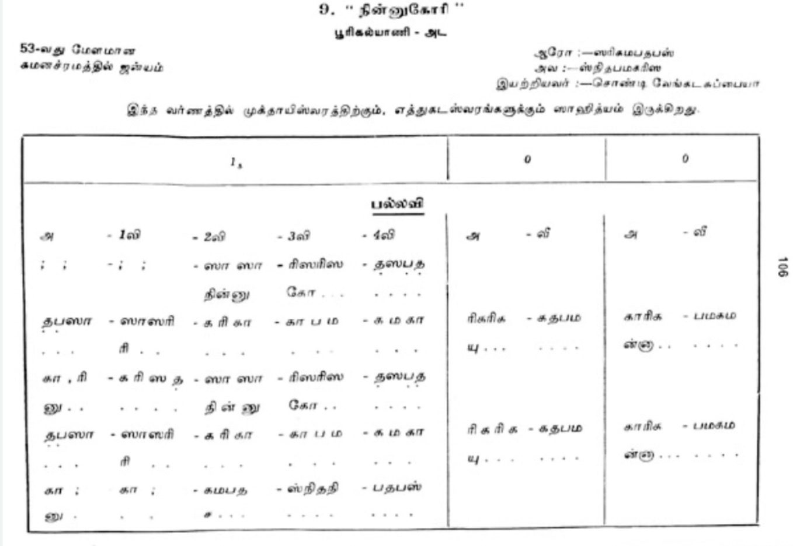
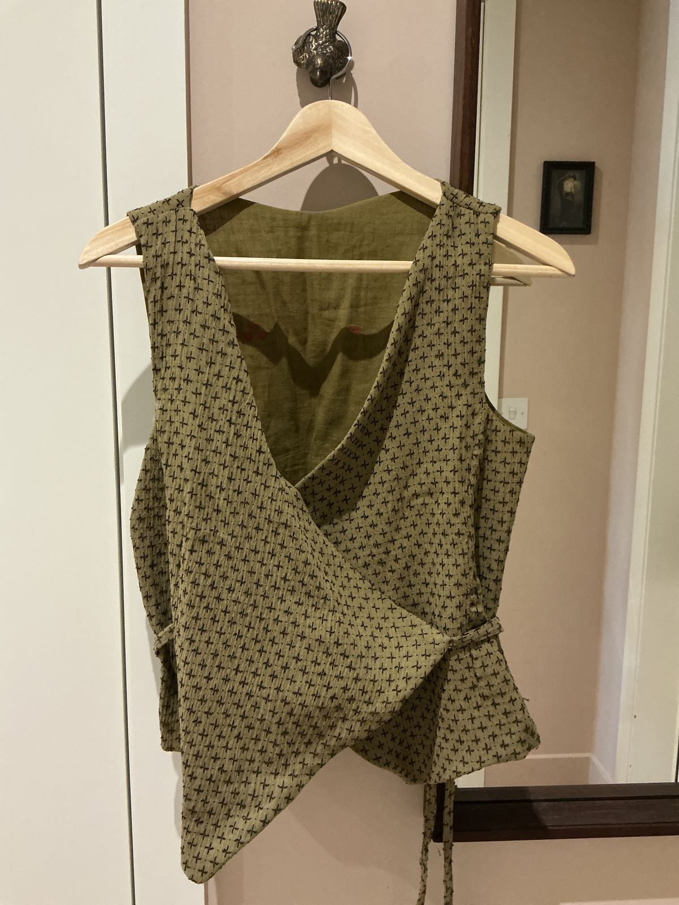
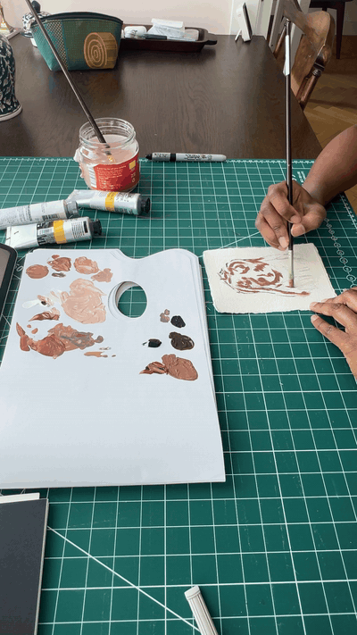
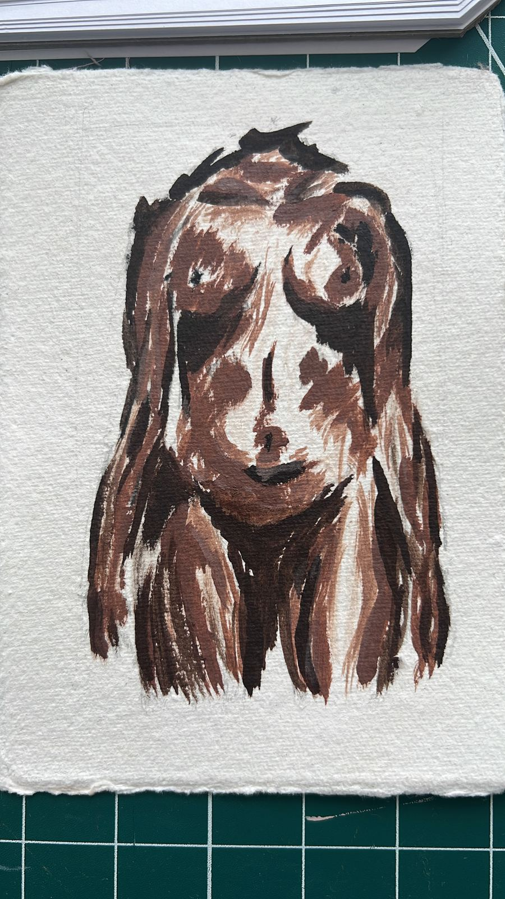
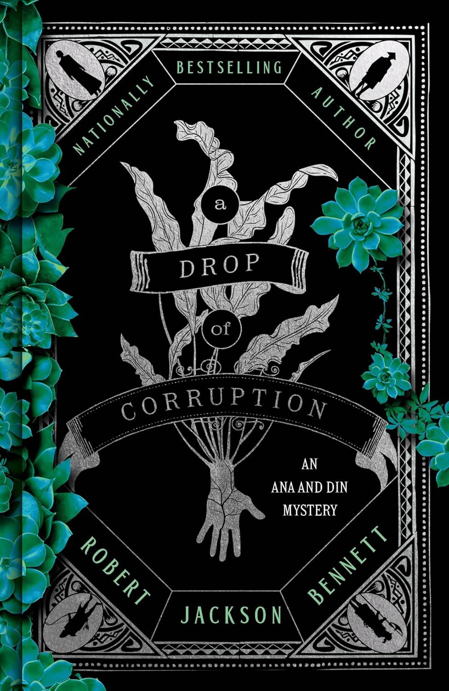

I used to go to ‘paatu class’ i.e. music class as a child. My mum’s idea. My sister and I would trudge along to music class after school, brown paper-covered music books in hand, to where the teacher lived.
She would always begin the class with the dreadful question ‘practice paneengala’ - did you practice?
Eight times out of 10 we would look at each other sheepishly and mutter that we didn’t or that we did but only for a little while. Practicing was the most boring thing in the world for both of us. Get through mountains of schoolwork only to remember that we still had to do music practice? No thanks. We’d rush through it eager to get it over with.
‘You need to practice properly like your teacher told you. Discipline is very important’ - My mother would say, only about 5 times a day.
All I could feel was the sinking feeling that I wasn’t cut out for this business of disciplined, consistent focus. It’s just not how my brain worked. Even then I knew my energy and interest came in waves.
But of course I didn’t dare say anything to my mother or my music teacher back then.
Fast forward 30 years. I still don’t like the words, discipline or consistency. I’m not a restless little girl, but a restless woman with a dynamic chronic illness. My interest still comes in waves and now so does my capacity. And not always together.
I have struggled a lot with the idea of consistency
For a while, the atomic habits framing, helped.
1% better each day. Just show up to do a thing, even if you only do a part of it
Just write 2 lines
Just go to the gym for a 5 minute walk.
Usually I would find that I would do more - writing or working out more than I planned. We have solved the problem with a combination of trickery and will power! Well done. The end.
Well not quite.
More often than not, doing more when my body is asking me to do less is only asking for trouble. I was solving one problem (staying consistent, building a habit) by creating a deeper one - I was telling my body I don’t care what you need.
What to do instead?
The word practice makes a comeback.
And this time it’s different. This time it’s not a stick to beat myself with.
Removed from its childhood friends, Discipline and Consistency, Practice is a softer container.
Practice isn’t about missing a day or a week.
Practice isn’t about what I create or the quality of the outcome. It doesn’t lead to perfection - in fact it rejects the idea of perfection.
Practice is just returning to something over and over.
This returning is not like the tropical sun, up and down with military precision every day of the year. But like the moon, waxing and waning.
Sometimes full of energy
Sometimes slow and reflective
Sometimes you don’t see it all, but you know it’s there
Maybe this seems pretty similar to the Atomic Habits framing. But for me it’s different in that it holds space for fluctuating capacity more intentionally. It’s not tricking myself into getting started and pushing through the pain.
It is saying, things are different today - how will your practice evolve? And from this intentional constraint comes more creativity - hopefully without the usual costs.

Made this wrap top. My first time working with seersucker fabric. It expands when you iron it which confused the hell out of me about how to actually cut and sew it. I winged it rather than turn to the internet for advice and it turned out pretty well.



second book of a fantasy murder mystery set in a strange overgrown world where buildings are grown and people are altered with the venoms, serums and reagents made from giant sea creatures that are constantly trying to breach the sea walls. We see more of this fascinating world in book 2 and I’m hoping we get more answers about the sea creatures. Now that I’m less occupied in just keeping up with worldbuilding I can pay more attention to the actual clueing which is always the fun part of reading a murder mystery for me.
I intended to write something work adjacent this week. I’ve gotten as far as one paragraph so far but getting to that paragraph was an interesting process. I wrote and deleted multiple opening lines that didn’t feel or sound like me. Or rather it sounds like the work-version of me rather than the actual me. And this whole thing is about unearthing my voice. So slow progress is maybe a good thing here.